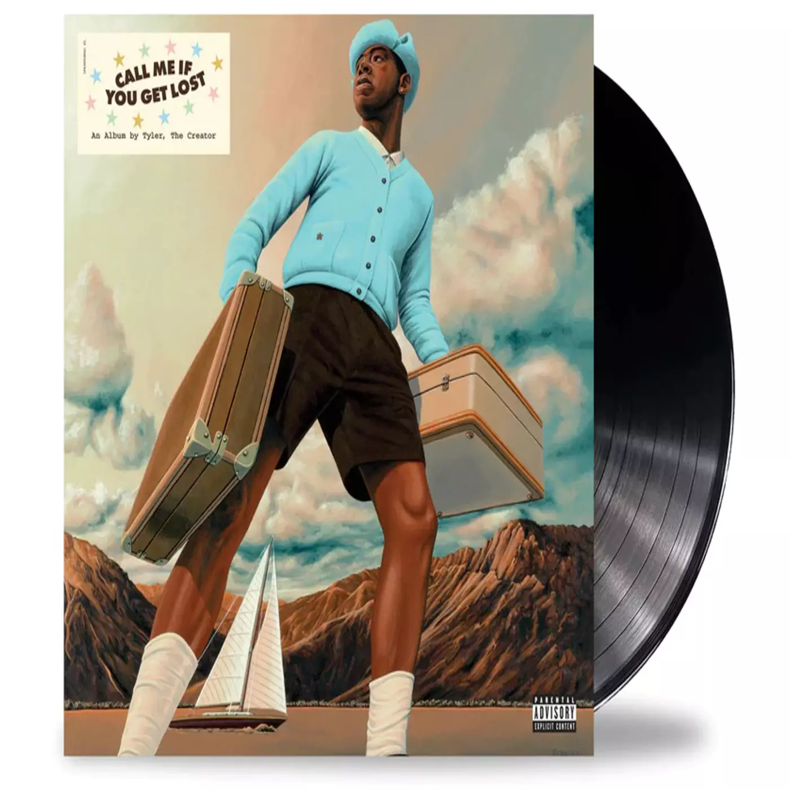
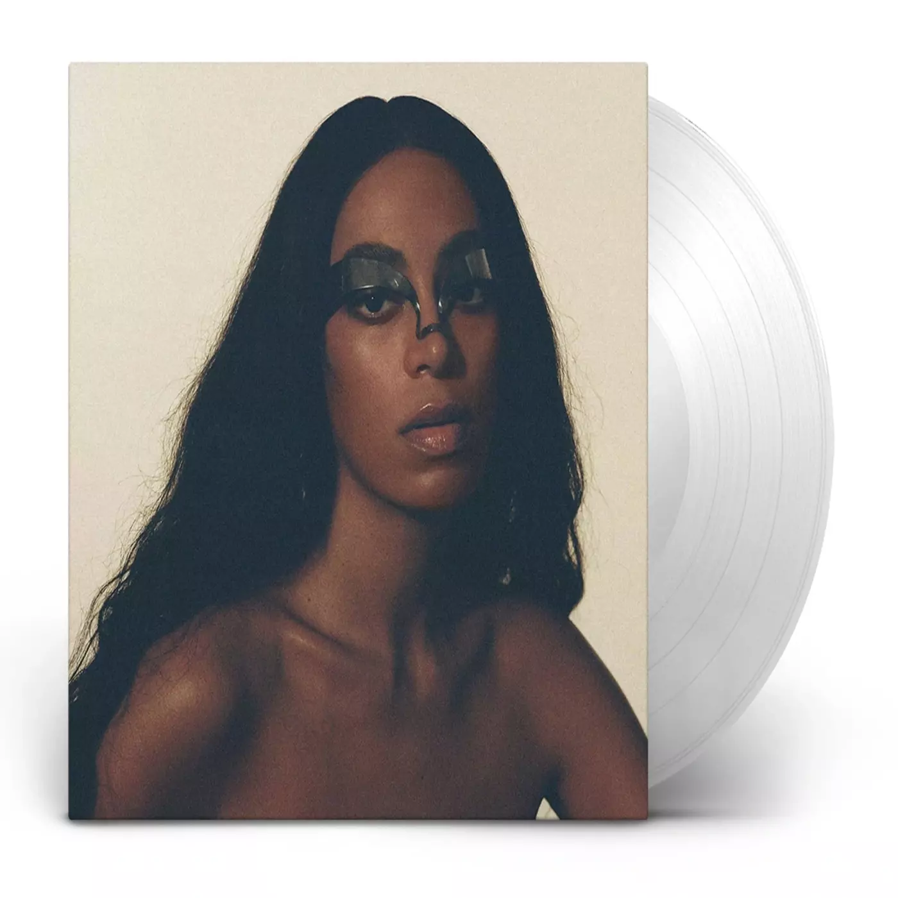
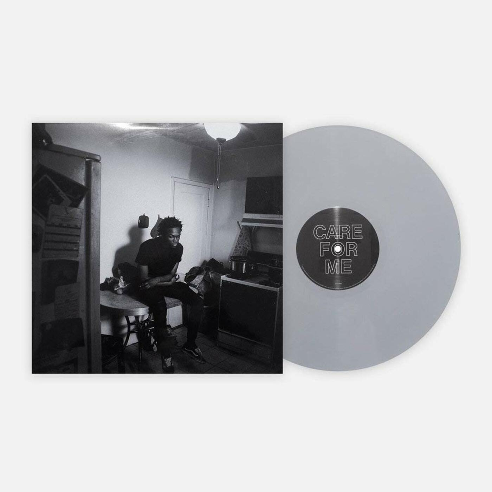
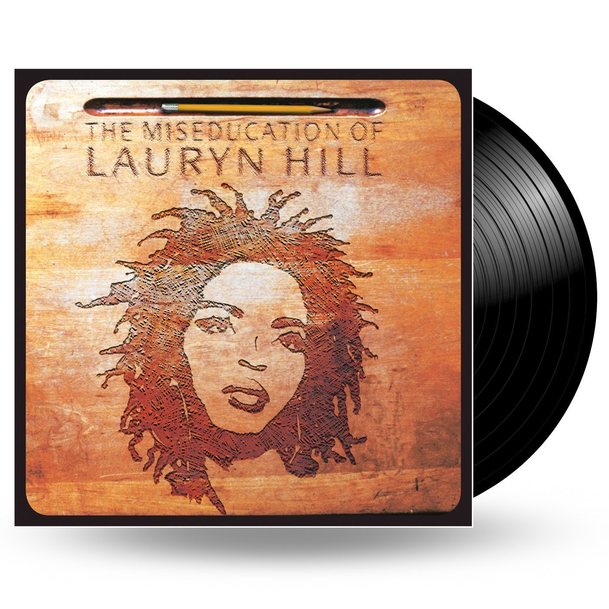
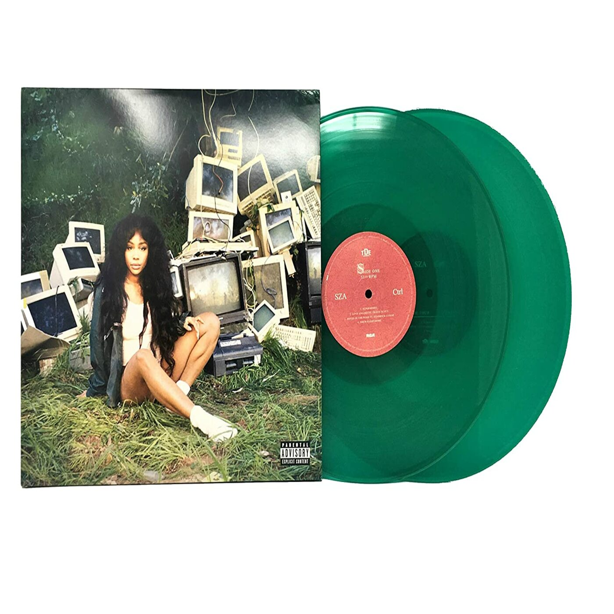
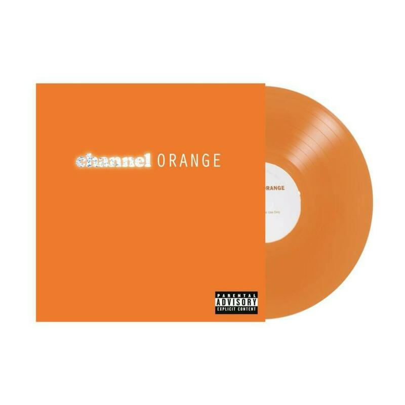
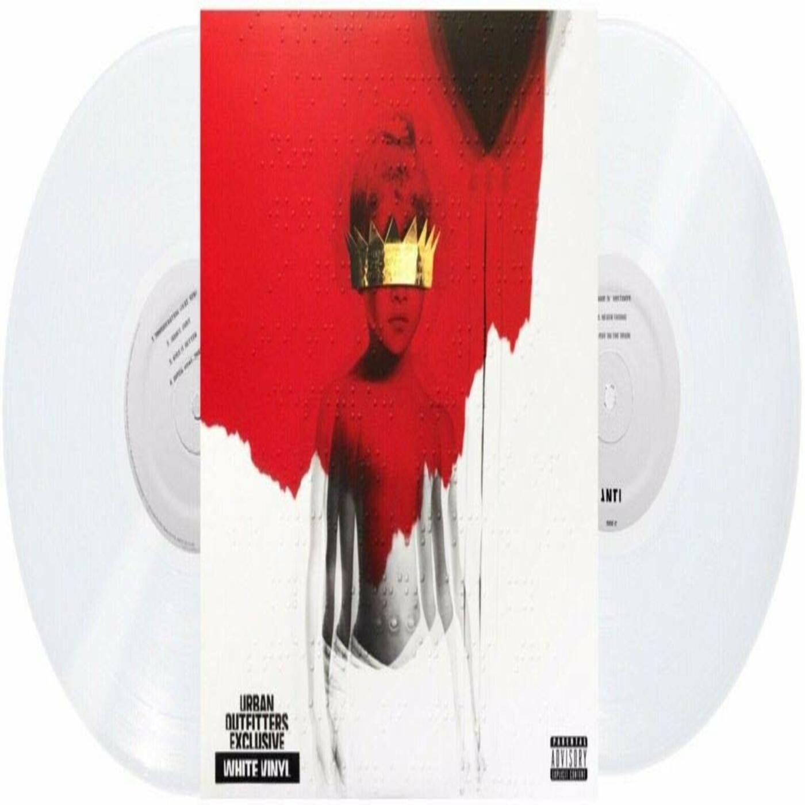
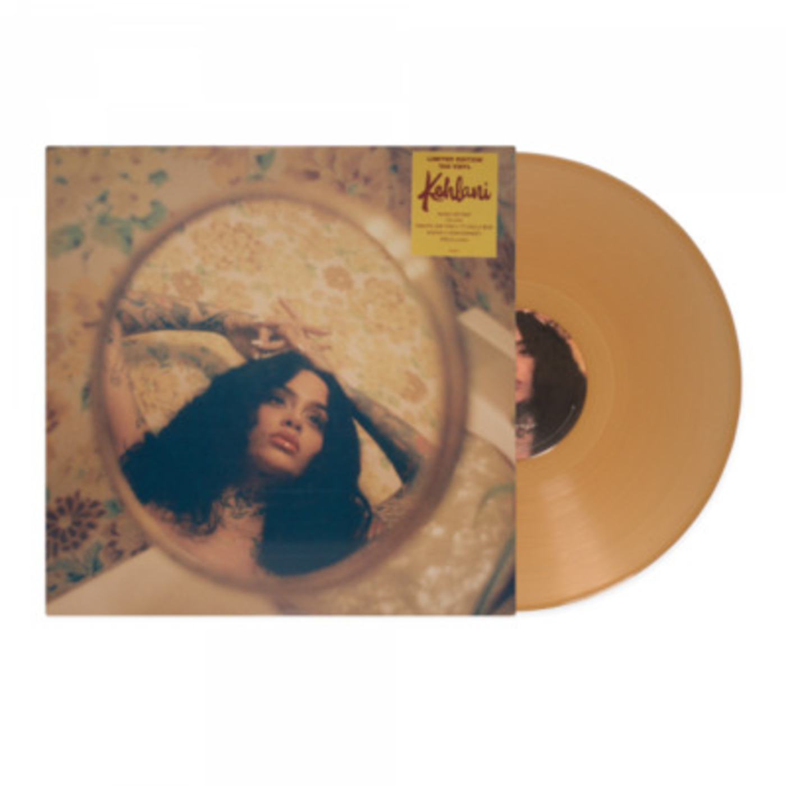
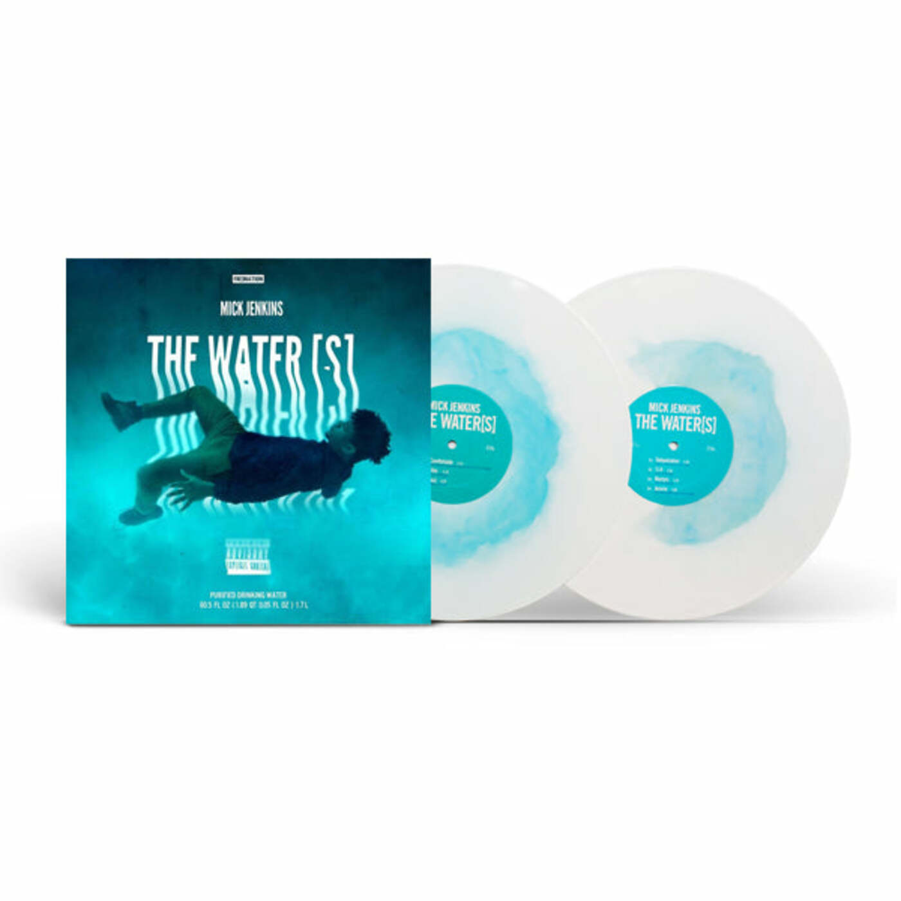
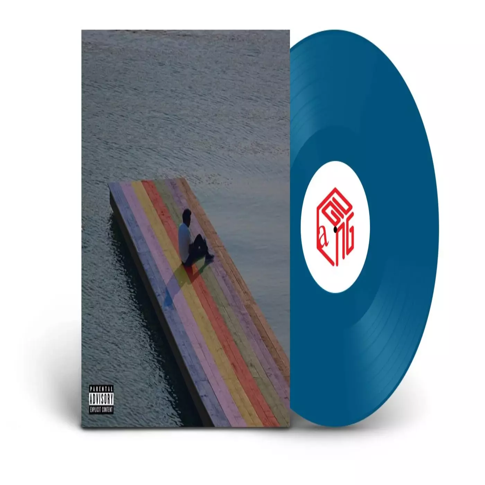

Vinyls
Call Me If You Get Lost Vinyl | Tyler The Creator

Call Me If You Get Lost is Tyler The Creator's sixth stuido album. It was released June 2021, produced by Columbia Records.
$39.99
When I Get Home | Solange

When I Get Home is Solange's fourth studio album. It was released March 2019, producded by Solange.
$39.99
Care For Me | Saba

Care for Me is Saba's second studio album. It was released April 2018, produced by Saba Pivot.
$39.99
Views | Drake

Views is Drake's fourth studio album. It was released April 2016, produced by Cash Money Records.
$39.99
Because The Internet | Childish Gambino

Because the Internet is Childish Gambino's second studio album. It was released December 2013, produced by Glassnote Records.
$39.99
The Miseducation of Lauryn Hill | Ms.Lauryn Hill

The Miseducation of Lauryn Hill is Lauryn Hill's debut studio album. It was released August 1998, produced by Ruffhouse Records and Columbia Records.
$39.99
Ctrl | SZA

Ctrl is SZA's debut studio album. It was released June 2017, produced by Top Dawg Entertainment(TDE).
$39.99
Channel Orange | Frank Ocean

Channel Orange is Frank Ocean's debut studio album. It was released July 2012, produced by Def Jam.
$39.99
Anti | Rihanna

Anti is Rihanna's eighth studio album.
was realesed January 2016, produced by Rihanna.
was realesed January 2016, produced by Rihanna.
$39.99
While We Wait | Kehlani

While We Wait is Kehlani's third mixtape. It was released February 2019, produced by Atlantic Records.
$39.99
The Water(S) | Mick Jenkins

The Waters is Mick Jenkins' fourth mixtape. It released August 2014, produced by Cinematic Music Group.
$39.99
The Melodic Blue | Baby Keem

The Melodic Blue is Baby Keem's debut studio album. It released September 2021, produced by Columbia Records.
$39.99